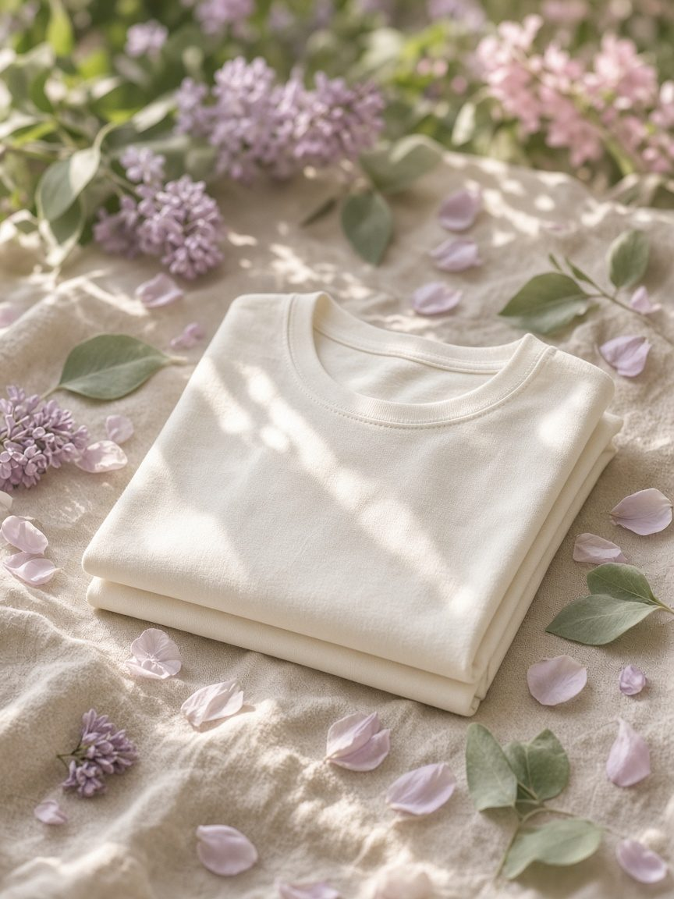

noywear.com
Full shop experience arrives with sample confirmation. Soft photography, fabric notes, fit guidance—kept breezy, never loud.
Join the preview listWomen’s Soft Essentials · Garden Drop
NoY makes soft tees and light knits for unhurried days— the kind of pieces you reach for when the light is gentle and nothing needs to be loud.

Like walking into a garden—unhurried.
Atelier · Mood
Painterly stills and botanical softwear studies—lilac, sage, blush, cream. Not a lobby. More like late afternoon among the flowers.



Shop
The online store opens with the first drop. Until then, Private Client previews are available by request—no checkout live on this page.
Full shop experience arrives with sample confirmation. Soft photography, fabric notes, fit guidance—kept breezy, never loud.
Join the preview listEarly access to colourways, size holds, and small-batch pieces. Write to us with your preferences; we reply personally.
zhaojinxiu0525@gmail.comCollection
Three silhouettes to begin: soft tee, light knit, and a fresh cut. Small runs first—fit and hand-feel before scale.
 01 · Core
01 · Core
 02
02
 03
03

About NoY
We like clothes that feel like open air—soft tees and light knits with a painterly calm. Fewer SKUs, clearer silhouettes, fabric finished against skin.
Luxury, for us, is leisure: the time to choose well, then wear it again tomorrow. Low-cost production, high care for pattern and finish.
Read the manifestoManifesto
Fewer choices.
More ease.
Softwear should feel like a garden path—open, unhurried, enough. Clean cuts, quiet information, every piece able to stand alone.
少一点选择，多一点从容。
Small drops. Choose the right piece rather than fill a wardrobe.
Hand-feel and drape first. Tees and knits you reach for again tomorrow.
Basics with a slight shift—collar, cut, or colour—kept breezy and understated.
Client Services
Clear policies, quiet support. Shipping, care, and fit guidance— written the way we design: short and exact.
Tracked dispatch once the drop opens. Easy returns within a defined window—details below.
Read policyHow to wash and rest soft cotton and light knits so they keep their hand and shape.
Care guideA simple chart and fit notes for tees and knits. When unsure, write us before you buy.
View guidePolicy
Transparent timing and a calm returns path—no urgency language, no fine print traps.
Approved refunds return to the original payment method within several business days after we receive and inspect the piece.
Care
Light hands, cool water, space to rest. Soft tees and knits last longer when treated gently.
Spot-clean when you can. Rotate wear so fibres recover. If a snag appears on knit, do not pull—reach us for repair advice.
Fit
Designed for an easy, close-but-comfortable line. When between sizes, size up for a softer drape.
| Size | Bust | Waist | Hip |
|---|---|---|---|
| XS | 80–84 | 62–66 | 86–90 |
| S | 84–88 | 66–70 | 90–94 |
| M | 88–92 | 70–74 | 94–98 |
| L | 92–98 | 74–80 | 98–104 |
Chart is indicative for the first drop. Exact garment measurements will appear on each product page. For Private Client sizing help: zhaojinxiu0525@gmail.com
Private Client
When samples and colourways are ready, we contact guests who leave details— before the public shop opens. Prefer email? Write directly to zhaojinxiu0525@gmail.com.
Email NoYContact
Orders, fit questions, press, and Private Client—one address. We aim to reply within two business days.
zhaojinxiu0525@gmail.com +86 159 9398 6893